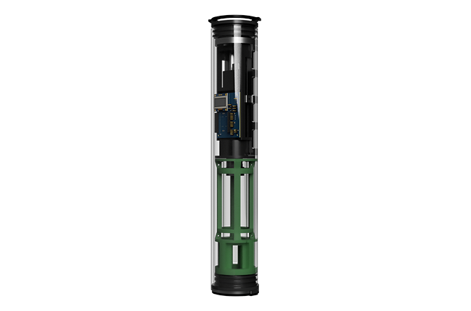
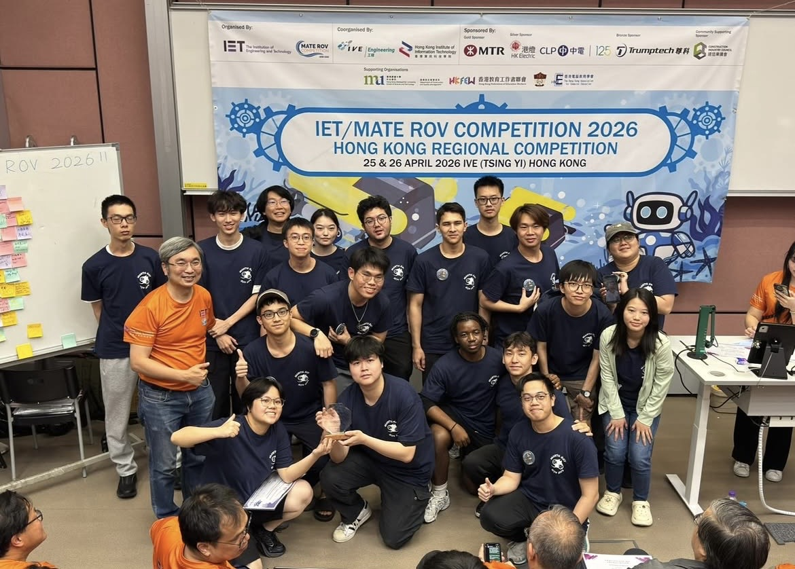

Underwater robotics
Buoyancy Float — Second Generation
Rebuilt for serviceability: single-panel access, port-side charging, and a 10S pack sized to the actuator's 12 V operating point.
Case study →
Underwater robotics
Buoyancy Float — Second Generation
- Role
- Person-in-Charge
- Team
- MantaRay PolyU
- Timeline
- Dec 2025 – present
- Status
- In development

Problem
- Reaching any critical component meant removing five to eight screws, so routine maintenance was slow.
- Recharging required pulling the battery pack, which broke the waterproof seal on every cycle and put the enclosure's integrity at risk.
What changed
- Sealed charging. Redesigned the PCB to route charge current from an external port to the onboard cells. The hull now stays closed between runs.
- Repacked the battery. Replaced the 8S2P arrangement with ten cells in series, holding the actuator at the 12 V it needs while keeping current headroom.
- Access. Reorganised the internal layout so serviceable components sit behind a single panel.
Next
In development for the 2027 MATE ROV season, targeting full points on the float task.